所有页面、按钮、状态与日常操作流程
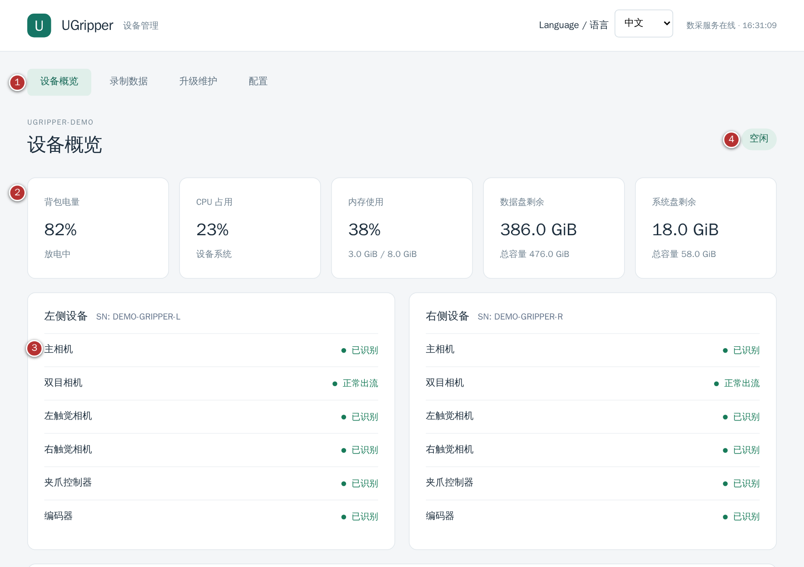
面向设备操作员、测试人员与维护人员。涵盖连接访问、状态检查、相机抓图、触觉检测、数据与日志下载、软件和固件升级、参数设置、编码器及自动测试。
更新日期：2026-09-24
适用版本：2.1.13 工作区，含 3588 启动固件升级入口
基准提交：862c630d + 工作区修改；不代表所有同版本设备均已更新
| 页码 | 内容 | 主要解决的问题 |
|---|---|---|
| 3–4 | 首次连接与操作密码 | 如何访问；哪些功能需要密码 |
| 5–6 | 设备概览与 Ego | 电量、磁盘、设备、绑定与时间状态 |
| 7 | 相机抓图 | 检查本机和 Ego 图像 |
| 8–10 | 触觉盖板与基线 | 检测、结果、黄灯及重置 |
| 11–13 | 日志与录制数据 | 获取排障材料、下载整条或单个文件 |
| 14–16 | 软件/固件升级与任务 | 看版本、选文件、看左右侧结果 |
| 17–19 | 参数与编码器 | 保存设置、读取位置、治具标零 |
| 20–21 | 时间同步测试 | 录制毫秒表、查看阶段和结果 |
| 22–23 | 生产压测 | 连续 62 轮测试、取消及通过条件 |
| 24–25 | 互斥关系、排障与交接 | 操作被拒绝时怎么办 |
| 26 | 3588 启动固件升级 | 上传 boot.img、重启与校验 |
截图来自仓库中真实 HTML、CSS 和交互脚本的浏览器渲染；为便于覆盖功能，状态、SN、版本、读数、文件清单和任务结果使用示例数据。红色圆圈为本手册添加的定位编号，不是页面原有控件。
盖板正常/损坏照片是系统自带的历史实拍样本。它们仅供外观对照，不代表当前设备状态。本文未通过升级、标零或测试录制来制造演示结果。
页面显示的传感器数量取决于设备配置。胸部主摄为可选项；不含双目的版本不应按完整双目配置验收。旧安装包可能缺少某些入口或密码弹窗，应以实际部署版本为准。
192.168.2.100，子网掩码 255.255.255.0。直连通常不需要网关。| 入口 | 行为与操作方法 |
|---|---|
| Language / 语言 | 右上角选择中文或 English，仅临时切换当前页面显示。刷新后跟随设备保存的语言；日志原文不翻译。 |
| 维护密码 | 修改设备参数、编码器标零、上传安装软件、升级固件时，在确认弹窗中输入。密码区分大小写，不能多输空格。 |
| 确认执行 | 确认弹窗中操作对象、左右侧和参数后提交。标零还必须勾选已安装指定治具；仅输入密码不能跳过此项。 |
| 取消 / Esc | 关闭确认弹窗，不提交此次操作；已输入的密码清空。任务提交后的关闭网页不等于取消后台任务。 |
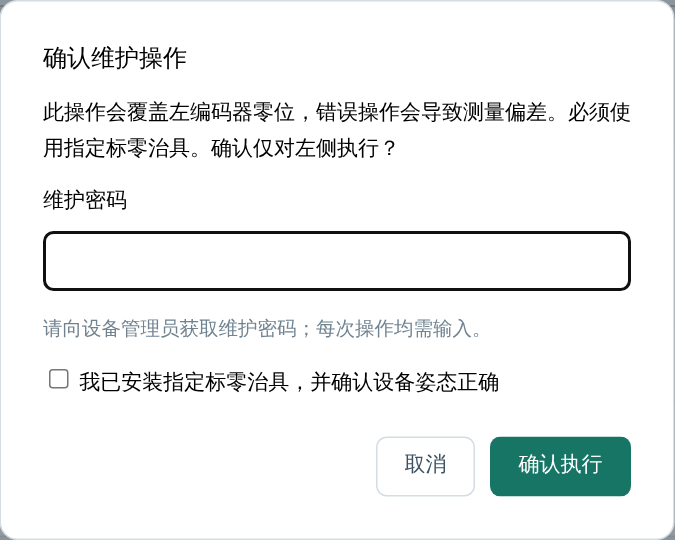
页面提示“维护密码错误，请重新输入”时，本次受保护请求不会派发维护任务。重新点击原操作按钮，核对操作内容并再次输入；软件升级需重新发起上传。不要把密码放入文件名、截图或发送给无关人员。
| 区域 | 是什么意思 / 应如何使用 |
|---|---|
| 背包电量 | 显示百分比和充电/放电状态；电量 ≤10% 时突出显示。电量不可用表示未取得有效状态，不等于 0%。 |
| CPU / 内存 | 当前系统负载和已用/总内存。用于观察运行压力；某一瞬间升高不直接证明故障。 |
| 数据盘 / 系统盘 | 分别显示剩余空间和容量。“未挂载”时应先检查数据盘，不能当作空盘使用。 |
| 左右设备 / SN | 按物理左右侧查看设备是否识别；标题后的 SN 是夹爪身份。断开或状态不新鲜时可能显示“—”。 |
| 已识别 / 正常出流 | “已识别”表示系统能看到设备节点，不保证通信、图像或固件均正常；“正常出流”还具有流状态证据。 |
| 暂未出流 / 未识别 | 分别表示已发现设备但缺少新鲜出流证据，或尚未看到设备。待启动稳定后复查，持续异常再取日志。 |
状态一般约每 3 秒刷新。“数采服务在线”表示服务运行；“空闲”表示当前未显示录制或维护占用。两者都不等于所有传感器已经完成质量验收。
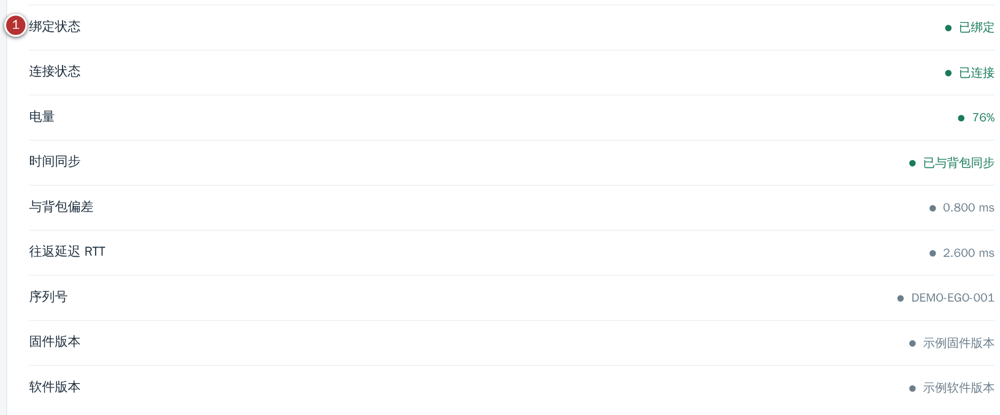
| 字段 | 含义 |
|---|---|
| 绑定状态 / 序列号 | 显示当前绑定关系和目标 Ego 身份。网页只展示绑定结果，没有绑定/解绑按钮；绑定使用设备既有实体操作流程。 |
| 连接状态 | 已绑定后查看是否在线。未绑定时显示“未检测（未绑定）”；未知表示证据缺失或过期，不能直接认定已连接。 |
| 电量 | 绑定且取得有效电量快照时显示百分比及充电状态；无有效数据时显示不可用。 |
| 时间同步 | 显示已与背包同步、同步中、连接断开、授时异常或旧版录制前校时。旧应用可能采用不同同步方式。 |
| 与背包偏差 / RTT | 偏差为报告的时钟差；RTT 为往返通信延迟，单位毫秒。“暂无测量”表示没有有效数据。它们不直接等于视频光学同步误差。 |
| 固件 / 软件版本 | 分别对应 Ego 系统固件与应用版本。断连后可显示“缓存”，不表示当前还能正常通信。 |
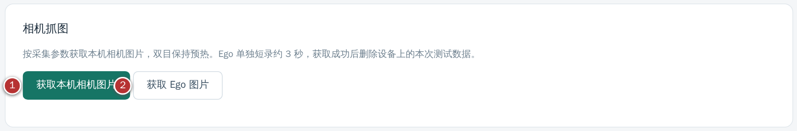
| 功能 | 用途和结果 |
|---|---|
| 获取本机相机图片 | 按当前采集配置检查主摄、双目、触觉及启用的胸部主摄。双目每侧输出一张双眼拼接图；触觉图片显示在触觉盖板区域。 |
| 获取 Ego 图片 | 选择已绑定 Ego，或未绑定时唯一在线 Ego，短录约 3 秒，拉取 RGB / ctrl / tracking 视频并截帧。不是实时视频预览。 |
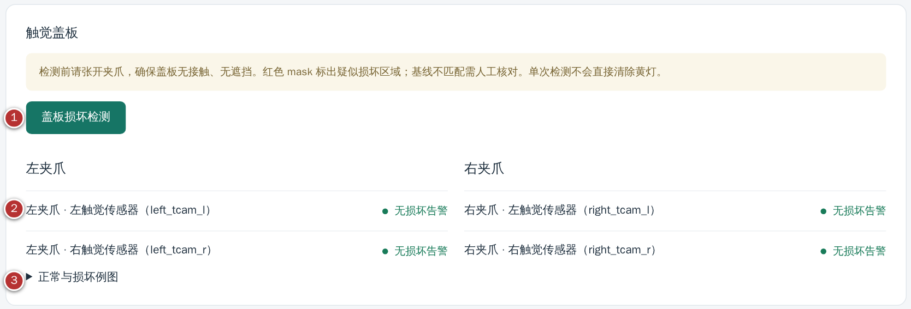
| 本次结果 | 怎么处理 |
|---|---|
| 正常 | 本次相对该基线未发现异常；仍需结合实物外观和连续告警。 |
| 疑似盖板损坏 | 查看红色 mask 标出的可疑区域，先排除接触和遮挡，再由维护人员检查实物。 |
| 基线不匹配 | 图像与基线存在不适合直接比较的差异，应核对传感器、外观及安装；不要直接判定损坏或正常。 |
| 尚未建立基线 | 缺少对应比较基准；由维护人员确认盖板完好后建立适当基线。 |
| 采集错误 / 未连接 | 本次没有可用判断，先处理连接或采集问题，再重新检测。 |
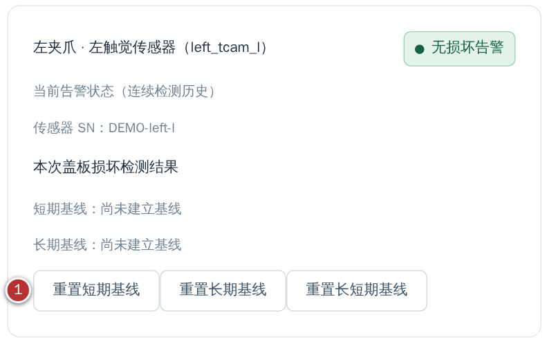
图片标题旁标签反映连续检测历史：黄色为盖板损坏告警，绿色为无损坏告警，灰色为状态未知或未连接。图片下方是本次检测结论。单次检测正常不会直接清除黄灯。设备换成另一 SN 后，旧图片会提示重新取图。
| 按钮 | 修改范围 |
|---|---|
| 重置短期基线 | 使用当前成功采集的图片替换 reference，并清除该基线对应的检测历史与告警。 |
| 重置长期基线 | 替换 persistent。长期基线用于保留稳定参考，不应为了消除告警随意覆盖。 |
| 重置长短期基线 | 同时替换两个基线。仅在两者均应重建时使用。 |
| 你看到的图 | 应如何理解 |
|---|---|
| 历史正常/损坏例图 | 固定参考样本，不随当前设备刷新，不用于判断当前传感器是否合格。 |
| 当前图 | 本次采集的触觉图像。先确认没有接触物、遮挡或采集异常。 |
| 检测状态图 / mask | 算法标记疑似异常区域，需结合对应基线、本次状态和实物共同判断。 |
图片来源：Web 自带 tactile-normal.png 与 tactile-damaged.png。损坏样本来源记录见项目 static/tactile-examples.json。
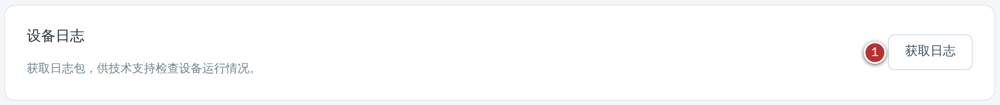
下载设备日志包，供技术支持检查数采、相机、USB、维护任务和系统运行情况。日志包不是录制视频，也不是整块数据盘的备份。
ugripper-logs.tar.gz 完成。| 包内内容 | 作用 |
|---|---|
| system.log | 由维护服务获取的系统日志内容。 |
| ugripper/ 下日志 | 设备运行日志文件；实际数量取决于设备运行和日志留存状态。 |
页面提示设备忙，先等待占用操作结束。浏览器中断或网络断开后，检查下载列表中是否有失败/未完成文件，重新获取；不要把仅开始下载视为已经取得完整日志。
设备 SN、Web 软件版本、问题时间、操作步骤、期望结果、实际提示、受影响的左右侧、episode 名称、完整日志包，以及能说明问题的界面图。
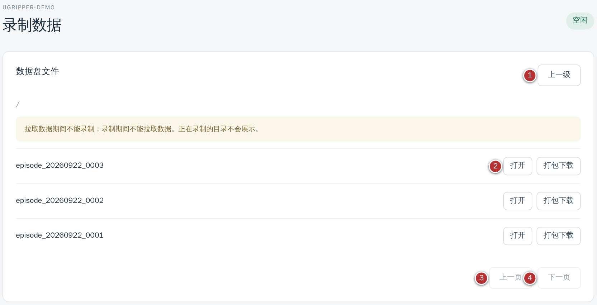
| 控件 | 用途 |
|---|---|
| 路径文字 | 当前目录相对于数据根目录的位置。进入目录后随导航变化。 |
| 打开 | 进入某个目录，查看该目录下的文件或子目录。 |
| 打包下载 | 把选中目录流式打包为 .tar 下载到电脑，适合一次获取完整 episode。 |
| 上一级 | 返回父目录；用于逐层退回数据目录。 |
| 上一页 / 下一页 | 目录项目较多时翻页；无前页或后页时对应按钮不可用。列表按名称倒序，较新的日期/编号通常靠前。 |
episode_日期_编号。*-temp 目录不会开放，不能通过这个入口取走正在写入的数据。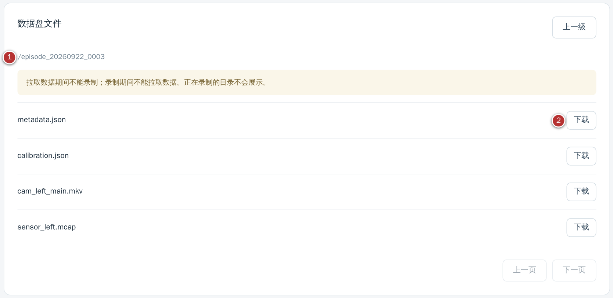
| 常见内容 | 用途 |
|---|---|
| 视频文件 .mkv | 主摄、触觉、双目等图像数据。播放器能否直接播放取决于编码支持；缺少 H.265 解码能力不等于文件损坏。 |
| sensor / Fays .mcap | 编码器、IMU、双目等结构化时序数据，通常由数据工具读取，不按普通视频打开。 |
| metadata.json | 本条录制的元信息与质量相关字段，用于数据检索、检查和后处理。 |
| calibration.json | 该条数据使用的标定信息。不要仅下载视频而遗漏需要配套使用的标定。 |
| ego/ 与音频 | 在相应功能启用且成功产出时出现；具体内容由设备配置和录制流程决定。 |
| stopwatch_timing.json | 时间同步测试额外写入的触发时间记录，见第 21 页。 |
在文件所在行点击“下载”即可获取单个文件；只排查某个小文件时比整条打包更方便。传输完成后核对浏览器状态和解包结果。网页下载成功只代表传输完成，不代表视频帧、时间戳或传感器数据全部合格。
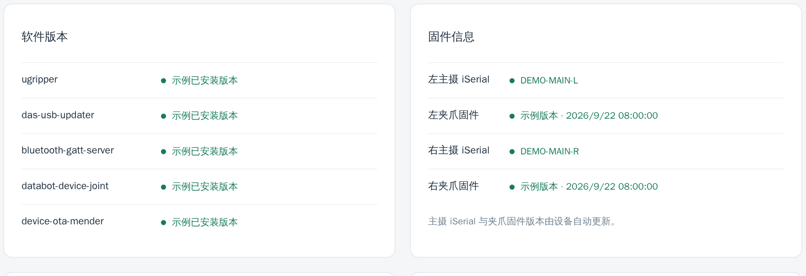
“未安装”表示未获取到该软件的安装版本。主摄 iSerial 是固件标识，不等同于夹爪 SN。夹爪版本由设备自动读取，可能显示等待自动读取、状态待更新或不可用；页面没有手动读版本按钮。
.deb 软件包，核对目标设备与版本。| 允许的软件包 | 说明 |
|---|---|
| ugripper | 数采主程序与随包功能。 |
| das-usb-updater | USB 更新组件。 |
| bluetooth-gatt-server | 蓝牙相关服务。 |
| databot-device-joint | 设备配套服务。 |
| device-ota-mender | 设备 OTA 组件。 |
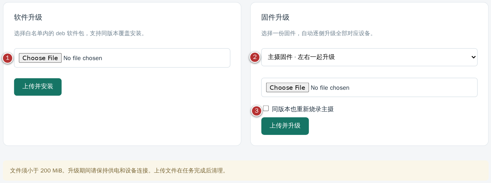
| 选择类型 | 文件与行为 |
|---|---|
| 主摄固件 · 左右一起升级 | 选择一份 .img，系统按左右侧顺序处理。版本相同时默认跳过；确需重刷同版本才勾选对应复选框。 |
| 夹爪固件 · 左右一起升级 | 选择一份 .hex，系统按固定左右夹爪串口顺序升级。主摄的“同版本重刷”选项不适用于夹爪。 |
主摄完成后会检查版本与硬件身份；iSerial 可以随固件改变。上传完成不等于刷写成功。网页关闭后已提交的刷写仍可能继续。
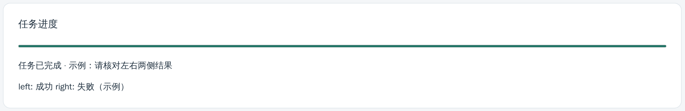
| 阶段 / 情况 | 含义与动作 |
|---|---|
| 正在上传 X% | 文件传到设备的进度；还没有证明软件安装或固件刷写完成。 |
| 已接收 / 正在执行 | 后台维护已接受或正在操作。保持电源与设备连接，等待具体结论。 |
| 任务结束 / 100% | 界面完成状态展示；必须同时检查文字和逐项结果，失败任务也可能显示已结束的进度条。 |
| 连接中断 | 网页无法更新，不代表后台操作取消。先恢复网络后重新查看任务，不立即再次升级。 |
| 单侧失败 | 记录失败侧与已成功侧版本，保存日志。不要假设两侧都未改变。 |
| 设备或服务重启 | 未完成维护任务可能被标记失败，不会自动重试烧录。重新确认状态后再决定是否重试。 |
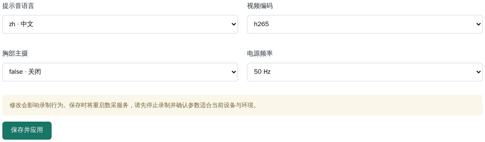
| 参数 / 选项 | 作用及选择原则 |
|---|---|
| 提示音语言 zh / en | 保存设备语言，影响提示音及网页刷新后的默认语言。右上角临时界面切换不会代替这项配置。 |
| 视频编码 h265 / h264 | 选择录制编码。H.265 通常压缩效率更高，H.264 常有更广的播放兼容性；具体体积取决于码率和场景。 |
| 胸部主摄 false / true | 关闭或启用胸部主摄录制。启用前应接好符合要求的相机；不要为没有该硬件的设备随意打开。 |
| 电源频率 50 / 60 Hz | 匹配现场电网和照明环境的抗工频配置。按实际环境选择，不把它当成任意提高帧率的开关；双目相关模式还依赖固件支持。 |
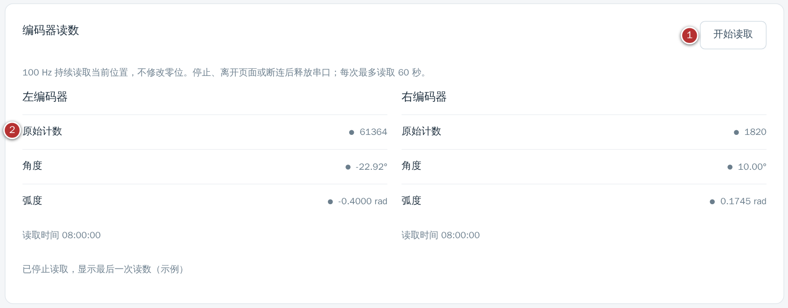
| 字段 | 解释 |
|---|---|
| 原始计数 | 无符号寄存器原值。大于等于 32768 的值换算角度时按有符号 16 位计数处理。 |
| 角度 / 弧度 | 同一位置的两种单位。可出现负数；例如原始计数 61364 对应约 −22.92° / −0.4000 rad，不表示读数坏了。 |
| 100 Hz 目标 / 实测 | 后台持续采样目标为 100 Hz；实际频率受设备和传输影响，浏览器画面刷新也受显示帧率限制。 |
| 丢失 / 读取时间 | 帮助判断读取是否持续更新。停止后保留的是最后一次读数，不是当前实时值。 |
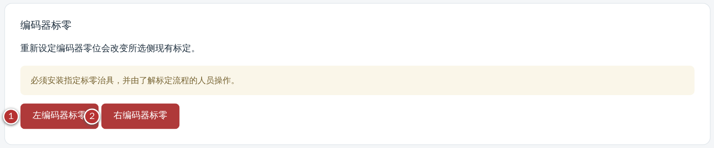
重新设定所选编码器的零位，改变该侧现有标定。仅由了解标定流程的人员，使用指定标零治具，在正确设备姿态下执行。读取显示值异常时，不应未经检查就直接标零。
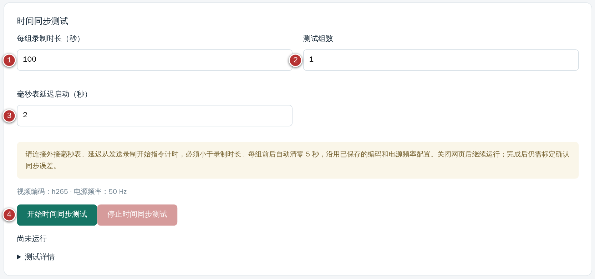
| 参数 | 允许值与含义 |
|---|---|
| 每组录制时长 | 整数 1–3600 秒，默认 100 秒。从发送录制 START 指令计时，硬件启动耗时可能使视频略短。 |
| 测试组数 | 整数 1–100，默认 1。按顺序执行多组，任一组失败后不再继续后续组。 |
| 毫秒表延迟启动 | 非负整数秒，默认 2，必须小于每组录制时长；同样从 START 指令计时。 |
点击“停止时间同步测试”后，等待当前录制和毫秒表完成收尾。关闭网页或拔掉网线不会停止后台任务；重新连接可看最新状态。维护服务重启会尝试复位毫秒表并停止该任务已知的录制，将任务标记为中断，不自动续跑。
| 状态 | 如何理解 |
|---|---|
| 毫秒表清零中 | 设备正在控制外接表复位，等待规定时间。 |
| 等待毫秒表启动 | START 已发出，正在等待设置的走表延迟。 |
| 录制中 / 收尾中 | 正在获取数据，或等待文件完成与检查。不要在收尾前断电。 |
| 采集完成 | 本任务录制与文件检查完成。尚不代表光学时间同步误差合格。 |
| 已取消 / 失败 / 中断 | 不能作为完整通过的测试。查看失败组和日志，再确定是否重测。 |
从“录制数据”下载对应 episode。每组增加 stopwatch_timing.json，包含实际 GPIO 边界、START/STOP 时间。结合视频中毫秒表读数和相应标定流程另行评估同步误差。
管理员结果位置：/var/lib/ugripper-web/time-sync.json；time-sync-results/ 保留最近 20 次报告和日志。网页没有单独的“下载测试报告”按钮。
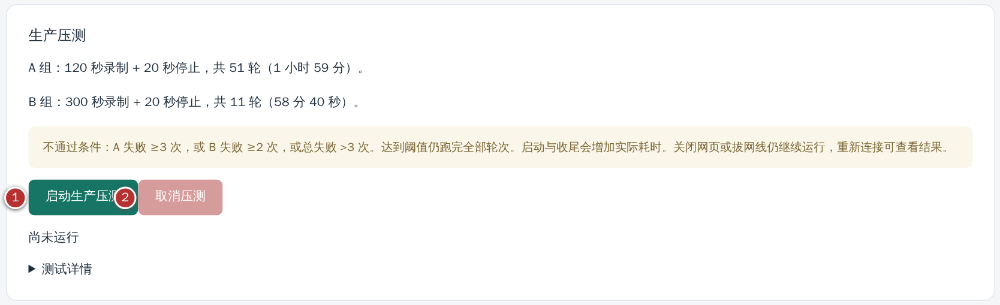
| 测试组 | 固定计划 |
|---|---|
| A 组 | 每轮录制 120 秒、停止间隔 20 秒，共 51 轮，名义 1 小时 59 分。 |
| B 组 | 每轮录制 300 秒、停止间隔 20 秒，共 11 轮，名义 58 分 40 秒。 |
| 合计 | 共 62 轮，名义 2 小时 57 分 40 秒，实际还要增加启动、停止收尾等时间。 |
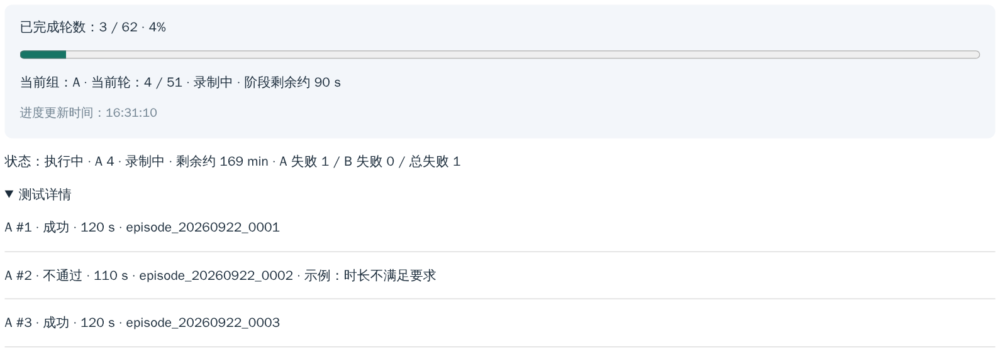
任一条件成立即不通过：A 组失败 ≥3 次，或 B 组失败 ≥2 次，或总失败 >3 次。触及门限后仍继续计划轮次，以保留完整证据；但无法安全停止当前录制时会中断整项任务。
| 失败计数示例 | 判定解释 |
|---|---|
| A=2，B=1 | 未触及失败门限；还须完整跑完并以最终“通过”状态确认。 |
| A=3，B=0 | A 组达到 3 次，判不通过。 |
| A=0，B=2 | B 组达到 2 次，判不通过。 |
| 已取消 / 异常中断 | 无论之前成功多少轮，都不作为完整通过。 |
正式质量结论、录制时长、必需文件和验证错误日志。时长允许目标 −2 至 +10 秒。每轮最多等待启动 30 秒、停止收尾 90 秒。展开“测试详情”可看轮次、实际时长、episode、失败原因与日志。
记录任务最终状态、A/B 失败数和异常轮次，下载相关 episode 与设备日志。断网时页面进度不再更新，恢复连接后以设备后台状态为准。
管理员结果位置：/var/lib/ugripper-web/production.json；production-results/ 保留最近 20 次报告。正式 episode 留在数据盘，不因压测结束自动删除。
| 操作 | 维护密码 | 关键限制 |
|---|---|---|
| 状态 / 版本查看 | 不需要 | 可在录制或任务期间查看；注意状态更新时间与缓存。 |
| 数据 / 日志下载 | 不需要 | 与录制和维护互斥；传输完成再开始下一项。 |
| 本机 / Ego 抓图 | 不需要 | 与录制、维护互斥；Ego 会短录，下一次抓图会替换预览。 |
| 盖板检测 | 不需要 | 与录制、维护互斥；夹爪应张开、盖板无接触。 |
| 触觉基线重置 | 不需要；弹框确认 | 最近 2 分钟成功图像、SN 匹配，并人工确认完好。 |
| 设备参数保存 | 需要 | 空闲时应用，重启数采服务。 |
| 编码器读数 | 不需要 | 与录制、维护互斥；单次最长约 60 秒。 |
| 编码器标零 | 需要 | 指定侧别 + 指定治具确认；改变该侧零位。 |
| 软件 / 固件升级 | 需要 | 上传和执行均校验；不能录制，保持供电连接。 |
| 时间同步测试 | 不需要 | 需要外接毫秒表；后台独占测试，与其他维护和下载互斥。 |
| 生产压测 | 不需要 | 确认后启动真实录制；与时间同步测试及其他维护互斥。 |
优先检查其他浏览器是否在下载、配置页编码器是否在读取，以及生产压测/同步测试是否仍在后台运行。即使实体录制已经停止，文件和校验仍可能收尾。
| 现象 | 先做什么 |
|---|---|
| 网页打不开 | 核对电源、网线、电脑同网段地址、https 和 8080 端口；地址被改过时使用实际配置。仍失败请管理员查 Web 服务。 |
| 连接中断 | 恢复网络后重连。升级/配置应用期间可能短暂断开，不要立即重复提交任务。 |
| 维护密码错误 | 确认大小写和空格，向管理员核对密码；重新打开原操作弹窗。密码不能替代设备空闲或治具条件。 |
| 按钮不可点 / 设备忙 | 查录制收尾、后台测试、下载、抓图、编码器会话与其他操作者，等待释放占用。 |
| 找不到最新数据 | 先等正式收尾，再重新进入数据页；正在写入的 -temp 不展示。检查层级和分页。 |
| 电量 / 版本未知 | 未知不等于 0 或版本被清空。确认连接后等待自动刷新，长期不更新再保存日志。 |
| 盖板正常仍有黄灯 | 核对连续历史和长短期两类基线；单次检测不会直接清除黄灯，不要盲目重置。 |
| 同步测试采集完成 | 下载 episode，继续评估视频中毫秒表与实际时间误差；页面未给出光学同步合格结论。 |
| 升级一侧成功一侧失败 | 记录两侧结果与版本，获取日志；已成功侧不会自动回滚。 |
核对设备 SN、供电、电量、数据盘挂载和余量；查看左右设备和需要的 Ego；必要时抓图检查视野，运行无接触盖板检测；确认没有遗留下载、读取或后台测试占用。
确认录制已收尾，下载必要数据并检查完整性。涉及维护时记录操作者、操作时间、设备 SN、文件版本、修改前后参数和最终结果。出现异常时附上日志和相关 episode。
本说明依据 UgripperWebServer 页面及脚本、README、HTTP 服务和项目 overview 编写。页面照片与任务示例不构成硬件验收报告。密码保护为本次新增行为，使用前确认目标设备已更新。
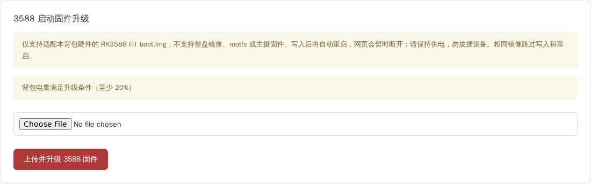
用于升级背包 RK3588 的 boot 启动固件，流程与背包生产工具一致。只接受适配当前背包硬件的 FIT boot.img；不是整盘镜像、rootfs、Mender 包或主摄固件入口。
| 任务结果 | 含义与处理 |
|---|---|
| 启动分区已匹配 | 当前分区内容与镜像一致，跳过写入和重启。 |
| 等待设备重启 | 已完成写后校验，尚未完成重启后校验；不能当作最终成功。 |
| 重启后校验通过 | 新启动周期中分区回读 SHA-256 匹配；之后还应检查相机、传感器和正常录制功能。 |
| 校验失败 / 任务中断 | 不会自动再次刷写。保留任务提示和日志，交由维护人员处理。 |